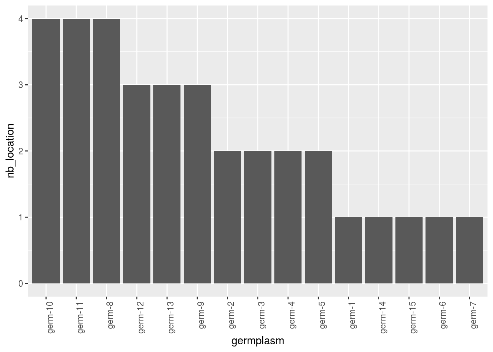

2.4 Bipart network analysis
This section deals with bipart network that represents “which location has which germplasm which year”.
2.4.1 Steps with PPBstats
- Format the data with
format_data_PPBstats() - get descriptive plot with
plot()
2.4.2 Format the data
The format required is a data frame with the following compulsory columns as factor: "germplasm", "location", "year".
Possible options are : "long", "lat" to get map representation
Note that data frame with unipart network for seed lots format can also be used.
The format of the data are checked by the function format_data_PPBstats() with the following arguments :
type:"data_network"network_part:"bipart"vertex_type:c("germplasm", "location")
The function returns list of igraph object3 coming from igraph::graph_from_data_frame().
data(data_network_unipart_sl)
head(data_network_unipart_sl)## seed_lot_parent seed_lot_child relation_type
## 1 germ-8_loc-1_2007_0001 germ-8_loc-1_2008_0001 selection
## 2 germ-8_loc-1_2008_0001 germ-8_loc-1_2009_0001 reproduction
## 3 germ-8_loc-1_2009_0001 germ-8_loc-2_2009_0001 diffusion
## 4 germ-8_loc-1_2008_0001 germ-8_loc-1_2009_0001 selection
## 5 germ-1_loc-1_2005_0001 germ-8_loc-1_2006_0001 reproduction
## 6 germ-6_loc-1_2005_0001 germ-8_loc-1_2006_0001 reproduction
## relation_year_start relation_year_end germplasm_parent location_parent
## 1 2007 2008 germ-8 loc-1
## 2 2008 2009 germ-8 loc-1
## 3 2009 2009 germ-8 loc-1
## 4 2008 2009 germ-8 loc-1
## 5 2005 2006 germ-1 loc-1
## 6 2005 2006 germ-6 loc-1
## year_parent alt_parent long_parent lat_parent germplasm_child
## 1 2007 50 0.616363 44.20314 germ-8
## 2 2008 50 0.616363 44.20314 germ-8
## 3 2009 50 0.616363 44.20314 germ-8
## 4 2008 50 0.616363 44.20314 germ-8
## 5 2005 50 0.616363 44.20314 germ-8
## 6 2005 50 0.616363 44.20314 germ-8
## location_child year_child alt_child long_child lat_child
## 1 loc-1 2008 50 0.616363 44.20314
## 2 loc-1 2009 50 0.616363 44.20314
## 3 loc-2 2009 360 3.087025 45.77722
## 4 loc-1 2009 50 0.616363 44.20314
## 5 loc-1 2006 50 0.616363 44.20314
## 6 loc-1 2006 50 0.616363 44.20314net_bipart = format_data_PPBstats(
type = "data_network",
data = data_network_unipart_sl,
network_part = "bipart",
vertex_type = c("germplasm", "location")
)## data has been formated for PPBstats functions.For bipart network, it returns a list with as many elements as year in the data as well as all years merged in the first element of the list. If no year are provided into the data, all information are merged.
names(net_bipart)## [1] "2005-2006-2007-2008-2009" "2005"
## [3] "2006" "2007"
## [5] "2008" "2009"2.4.3 Describe the data
The different representations are done with the plot() function.
p_net = plot(net_bipart, plot_type = "network",
labels_on = TRUE, labels_size = 4)
names(p_net) # one element per year, the first element with all the data## [1] "2005-2006-2007-2008-2009" "2005"
## [3] "2006" "2007"
## [5] "2008" "2009"p_net$`2009`## $networkWith barplots, it represents the number of edges per vertex for each germplasm and each location.
p_bar = plot(net_bipart, plot_type = "barplot")
names(p_bar) # one element per year, the first element with all the data## [1] "2005-2006-2007-2008-2009" "2005"
## [3] "2006" "2007"
## [5] "2008" "2009"p_bar = p_bar$`2005-2006-2007-2008-2009`$barplot
p_bar$germplasm
p_bar$locationLocation present on the network can be displayed on a map with plot_type = "map".
When using map, do not forget to use credit :
Map tiles by Stamen Design,
under CC BY 3.0.
Data by OpenStreetMap,
under ODbL.
p_map = PPBstats:::plot.data_network(net_bipart[1], plot_type = "map", labels_on = "location")
p_map$`2005-2006-2007-2008-2009`## $mapAs well as plot information regarding a variable on map with a pie with plot_type = "map" and by setting arguments data_to_pie and vec_variables:
# y1 is a quantitative variable
p_map_pies_y1 = PPBstats:::plot.data_network(net_bipart[1], data_to_pie, plot_type = "map", vec_variables = "y1")
p_map_pies_y1$`2005-2006-2007-2008-2009`## $y1_map_with_pies# y2 is a qualitative variable
p_map_pies_y2 = PPBstats:::plot.data_network(net_bipart[1], data_to_pie, plot_type = "map", vec_variables = "y2")
p_map_pies_y2$`2005-2006-2007-2008-2009`## $y2_map_with_pies